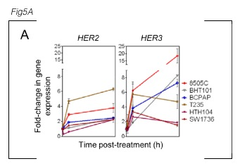
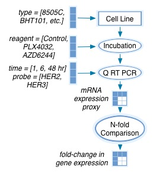
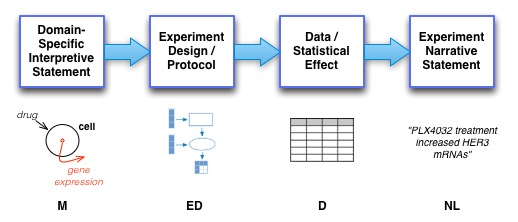

How should we embed practical KEfED tags into the text of scientific articles.
We base this work on three papers that were distributed by the program managers as preliminary text that we should be examining in more detail. Each paper is open access and can be read directly from PubMed Central. We list only the fragments with text describing experimental results since the other fragments were concerned with interpretations of those results pertaining to pathway models. We focus only on modeling the experimental data and the main statistical findings derived from that data.
Fragment 1:
We next examined the mechanisms accounting for the increase in HER3 by MAPK pathway inhibitors in BRAF mutant thyroid cell lines. Upregulation of HER3 has been found to mediate resistance to PI3K/AKT (26) or HER2 (27) inhibitors in HER2-amplified breast cancer cell lines, which is caused in part through a FoxO3A-dependent induction of HER3 gene transcription. As shown in Fig. 5A, PLX4032 treatment increased HER3 and HER2 mRNAs in all six BRAF-mutant thyroid cancer cell lines tested. Similar results were found following treatment with the MEK inhibitor AZD6244 (not shown). The effects of the MEK inhibitor on total HER2, HER3 protein and on pHER3 were dose dependent, and inversely associated with the degree of inhibition of pERK (Fig. 5B). RAF or MEK inhibitors induced luciferase activity of a HER3 promoter construct spanning ~ 1 kb upstream of the transcriptional start site in 8505C cells. Serial deletions identified a minimal HER3 promoter retaining transcriptional response to vemurafenib and AZD6244, which was located between −401 and −42 bp (Fig. 5C). This region does not contain any predicted FoxO binding sites. Moreover, PLX4032 led to an increase in phosphorylation of FoxO1/3A between 4–10h after addition of compound (not shown), which is known to promote its dissociation from DNA, and likely discards involvement of these factors as transcriptional regulators of HER3 in response to MAPK pathway inhibition. The minimal HER3 promoter region regulated by MAPK inhibitors overlaps with sequences previously described to be immunoprecipitated using antibodies against the ZFN217 transcription factor and CtBP1/CtBP2 corepressors (28–30). CtBPs have also been described to negatively regulate transcriptional activity of the HER3 promoter in breast carcinoma cell lines (30). Silencing of CtBP1, and to a lesser extent CtBP2, increased basal HER3 in 8505C cells, and markedly potentiated the effects of PLX4032 (Fig. 5D and 5E). Knockdown of these factors modestly increased basal and PLX4032-induced HER2 levels, which likely contributes to the remarkable increase in pHER3 we observed (Fig. 5D and 5E). Finally, CtBP1 and CtBP2 chromatin immunoprecipitation assays showed decreased binding to the HER3 promoter after treatment with PLX4032 (Fig. 5F). These findings were confirmed in a second cell line (Supplementary Fig. S5A).
sasaki-2011-4-ra13-frg[1-3]Fragment 3:
We utilized an unbiased mass spectrometry-based approach to identify ubiquitination sites of Ras. His-tagged ubiquitin and Flag-tagged K-Ras4B (K-Ras hereafter) were expressed in HEK293T cells at levels similar to endogenous K-Ras (Fig. 1B) and subjected to sequential affinity chromatography. His-ubiquitinated proteins were purified by Co2+ metal affinity chromatography in 8M urea denaturing conditions. His-ubiquitinated K-Ras was subsequently purified with anti-Flag resin. Following purification, mono- and di- ubiquitinated K-Ras appeared to be the major ubiquitination forms, which is consistent with the endogenous K-Ras ubiquitination pattern (Fig. 1, A and B). H-Ras ubiquitination sites were also determined by the same approach. Tandem mass spectrometric analysis of tryptic fragments from the bands migrating at the positions expected for mono- and di-ubiquitinated Ras revealed ubiquitination at Lys residues 104 and 147 of K-Ras, and Lys residues 117, 147 and 170 for H-Ras (fig. S1C). The tryptic peptide with ubiquitination at Lys147 (K147) was the most frequently observed peptide for both K-Ras and H-Ras, while Lys117 appeared as a secondary major ubiquitination site in H-Ras.
turke-2012-72-3228-frg[1-2]Fragment 1:
We hypothesized that MEK inhibition activates AKT by inhibiting ERK activity, which blocks an inhibitory threonine phosphorylation on the JM domains of EGFR and HER2, thereby increasing ERBB3 phosphorylation. To test this hypothesis, we transiently transfected CHO-KI cells, which do not express ERBB receptors endogenously, with wild-type ERBB3 with either wild-type EGFR or EGFR T669A. In cells transfected with wild-type EGFR, MEK inhibition led to feedback activation of phospho-ERBB3 and phosho-EGFR, recapitulating the results we had observed in our panel of cancer cell lines (Figure 6A). In contrast, the EGFR T669A mutant increased both basal EGFR and ERBB3 tyrosine phosphorylation that was not augmented by MEK inhibition. As a control, we treated CHO-KI cells expressing EGFR T669A with HRG ligand to induce maximal ERBB3 phosphorylation (Figure 6A), indicating that the lack of induction of phospho-ERBB3 in EGFR T669A expressing cells following MEK inhibition was not simply due to the saturation of the system with phospho-ERBB3. We observed analogous results in CHO-KI cells expressing wild-type ERBB3 in combination with wild-type or T677A mutant HER2 (Figure 6B). Together these results support the hypothesis that inhibition of ERK-mediated phosphorylation of a conserved JM domain threonine residue leads to feedback activation of EGFR, HER2, and ERBB3 (Figure 7).
Fragment 2:
To determine if this feedback model explains the activation of PI3K signaling in EGFR-mutant cancers, we used shRNA to knockdown endogenous EGFR (which carries an exon 19 deletion) in the HCC827 NSCLC cell line and replaced with either EGFR (exon 19del) wild-type at T669, or EGFR (exon 19del) carrying a T669A mutation. Of note, this is the same EGFR-mutant cell line in which we observed that EGFR T669 is phosphorylated in MEK-dependent manner (Figure 5, Supplemental Figure 8A). When endogenous EGFR was replaced with EGFR (exon19del) wild-type at T669, MEK inhibition led to significant feedback activation of ERBB3/PI3K/AKT signaling (Figure 6C). However, replacement with the EGFR (exon19 del) T669A mutant led to increased tyrosine phosphorylation of both EGFR and ERBB3, and activation of PI3K/AKT signaling, mimicking the effect of MEK inhibition (Figure 6C). As expected, addition of AZD6244 failed to further augment ERBB3 and AKT phosphorylation in cells expressing the 669A mutant. These results demonstrate that EGFR T669 phosphorylation is necessary for MEK/ERK to suppress EGFR-mediated activation of ERBB3. This supports the hypothesis that a dominant ERK feedback on ERBB3/PI3K/AKT is mediated though phosphorylation of T669 on EGFR (or T677 HER2).
Examining the first fragment shown from Montero-Conde et al. 2013 in more detail, we observed that there were five assertions derived from six separate experiments each elaborated in more detail in the sub panels of Figure 5. Thus, it seems that we may break down the narrative structure of the paper based on the subelements of Figures, that tend to describe a large number of separate small scale experiments. Using KEfED as a basic data modeling process, we were able to study the underlying experimental design that provides the basis of each statement that we are attempting to read computationally.
Thus, we broke this fragment into sentences that pertain to each sub-figure, modeled the experimental design of each subfigure and then attempted to map out the data of each of these experiments.
Narrative Text:
As shown in Fig. 5A, PLX4032 treatment increased HER3 and HER2 mRNAs in all 6 BRAF- mutant thyroid cancer cell lines tested.

The figure legend reads:
A, a panel of BRAF-mutant thyroid cells was treated with 2 μmol/L PLX4032 for 1, 6, or 48 hours and cell lysates analyzed for expression of HER3 and HER2 by quantitative (qRT-PCR). Points represent fold- change of HER/GAPDH qRT-PCR values of triplicate assays (mean ± SD) over untreated controls.
Reading this text (and text from the paper's material's and methods section) allows us to reconstruct the following model:

Based on KEfED's modeling principles (described here: Russ et al. 2011), we can therefore completely reconstruct the data in this experiment by manually reading numbers off the figure based on this relation.
?gene-expression-nfold-change[?cell-type][?reagent][?time][?probe]
| ?cell-type | ?reagent | ?time | ?probe | ?gene-expression-nfold-change | ||
|---|---|---|---|---|---|---|
| 8505C | 2 μM PLX40 | 1 | HER2 | 1 .0 ± 0.01 | ||
| 8505C | 2 μM PLX40 | 6 | HER2 | 2.9 ± 0.05 | ||
| 8505C | 2 μM PLX40 | 48 | HER2 | 3.6 ± 0.4 | ||
| 8505C | 2 μM PLX40 | 1 | HER3 | 1 .0 ± 0.01 | ||
| 8505C | 2 μM PLX40 | 6 | HER3 | 6 .2 ± 1.0 | ||
| 8505C | 2 μM PLX40 | 48 | HER3 | 18.0 ± 10.0 | ||
| BHT101 | 2 μM PLX40 | 1 | HER2 | 1 .0 ± 0.01 | ||
| BHT101 | 2 μM PLX40 | 6 | HER2 | 1.2 ± 0.1 | ||
| BHT101 | 2 μM PLX40 | 48 | HER2 | 2.0 ± 0.4 | ||
| BHT101 | 2 μM PLX40 | 1 | HER3 | 1 .0 ± 0.01 | ||
| BHT101 | 2 μM PLX40 | 6 | HER3 | 1.8 ± 1.0 | ||
| BHT101 | 2 μM PLX40 | 48 | HER3 | 8.1 ± 0.1 | ||
| BCPAP | 2 μM PLX40 | 1 | HER2 | 1 .0 ± 0.01 | ||
| BCPAP | 2 μM PLX40 | 6 | HER2 | 1.8 ± 0.1 | ||
| BCPAP | 2 μM PLX40 | 48 | HER2 | 2.1 ± 0.1 | ||
| BCPAP | 2 μM PLX40 | 1 | HER3 | 1 .0 ± 0.01 | ||
| BCPAP | 2 μM PLX40 | 6 | HER3 | 3.9 ± 1.0 | ||
| BCPAP | 2 μM PLX40 | 48 | HER3 | 7.0 ± 0.5 | ||
| T235 | 2 μM PLX40 | 1 | HER2 | 1 .0 ± 0.01 | ||
| T235 | 2 μM PLX40 | 6 | HER2 | 4.4 ± 0.2 | ||
| T235 | 2 μM PLX40 | 48 | HER2 | 6.1 ± 0.1 | ||
| T235 | 2 μM PLX40 | 1 | HER3 | 1 .0 ± 0.01 | ||
| T235 | 2 μM PLX40 | 6 | HER3 | 5.8 ± 0.3 | ||
| T235 | 2 μM PLX40 | 48 | HER3 | 4.7 ± 0.5 | ||
| HTH104 | 2 μM PLX40 | 1 | HER2 | 0.5 ± 0.01 | ||
| HTH104 | 2 μM PLX40 | 6 | HER2 | 0.7 ± 0.2 | ||
| HTH104 | 2 μM PLX40 | 48 | HER2 | 2.0 ± 0.1 | ||
| HTH104 | 2 μM PLX40 | 1 | HER3 | 1 .0 ± 0.01 | ||
| HTH104 | 2 μM PLX40 | 6 | HER3 | 2.7 ± 0.3 | ||
| HTH104 | 2 μM PLX40 | 48 | HER3 | 2.1 ± 0.3 | ||
| SW1736 | 2 μM PLX40 | 1 | HER2 | 1 .0 ± 0.01 | ||
| SW1736 | 2 μM PLX40 | 6 | HER2 | 1.2 ± 0.01 | ||
| SW1736 | 2 μM PLX40 | 48 | HER2 | 2.0 ± 0.1 | ||
| SW1736 | 2 μM PLX40 | 1 | HER3 | 1 .0 ± 0.01 | ||
| SW1736 | 2 μM PLX40 | 6 | HER3 | 3.1 ± 0.3 | ||
| SW1736 | 2 μM PLX40 | 48 | HER3 | 1.9 ± 0.3 | ||
Thus, summarizing the data in the table above provides the following logical relations (which are asserted as generalized in all conditions of ?cell-type and ?time):
?gene-expression-nfold-change[?reagent=PLX40][?probe=HER3]
>>
?gene-expression-nfold-change[Control][HER3]
This logical relation is expressed as natural language in the paper.
Ultimately, the challenge of this work is to reconstruct the likelihood of a given statistical effect in a given experimental type for a given interpretation based on the text written in the underlying paper. This view may be summarized in the following figure.

And, at a high level, by Bayes Law, we may then consider that the likelihood of a given model based on the stated text in the paper is given by p( M | NL ), which by Bayes Law, may be expressed as a noisy channel models based on the following high level formulation:
p( M | NL ) = p(M) p( NL | M ) / p ( NL )
p( NL | M ) = p(M) p( ED | M ) p( D | ED ) p( NL | D )
This is a guiding strategic methodology for applying KEfED to the Big Mechanisms challenge.